ANOS PASSAM.
O RONCO PERMANECE.
Mais que carros antigos.
Memórias sobre rodas.

A ORIGEM DO CLUBE
O Clube de Veículos Antigos de Curvelo nasceu da paixão de amigos e admiradores do antigomobilismo, unidos pelo desejo de preservar a história e a cultura dos veículos clássicos em nossa cidade.

A PRIMEIRA FAÍSCA
Nasce a ideia de unir apaixonados por carros antigos em Curvelo.
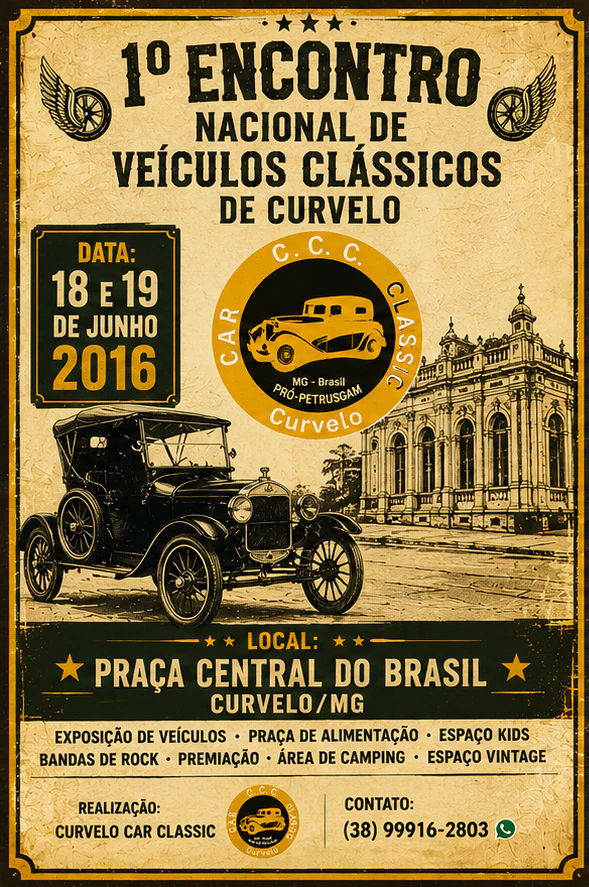
ENCONTROS INFORMAIS
Durante cerca de 10 anos, o grupo manteve suas atividades de forma informal, promovendo encontros entre colecionadores, entusiastas e famílias apaixonadas pelo universo dos carros antigos.

O ENCONTRO GANHA FORÇA
Mais amigos chegam, mais histórias aparecem e a paixão cresce.
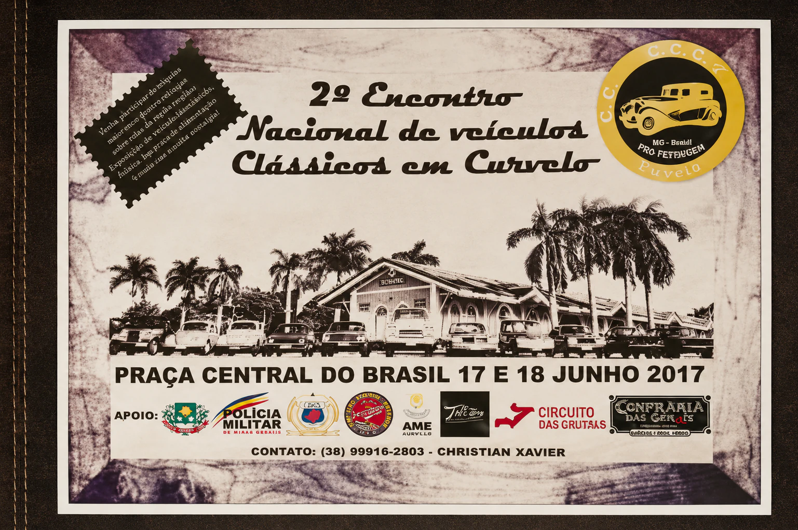
INÍCIO OFICIAL
A partir de 2016, o clube passou a organizar oficialmente os encontros de veículos antigos, fortalecendo o movimento antigomobilista em Curvelo e região.

MEMÓRIAS SOBRE RODAS
Os encontros começam a virar tradição entre famílias e colecionadores.
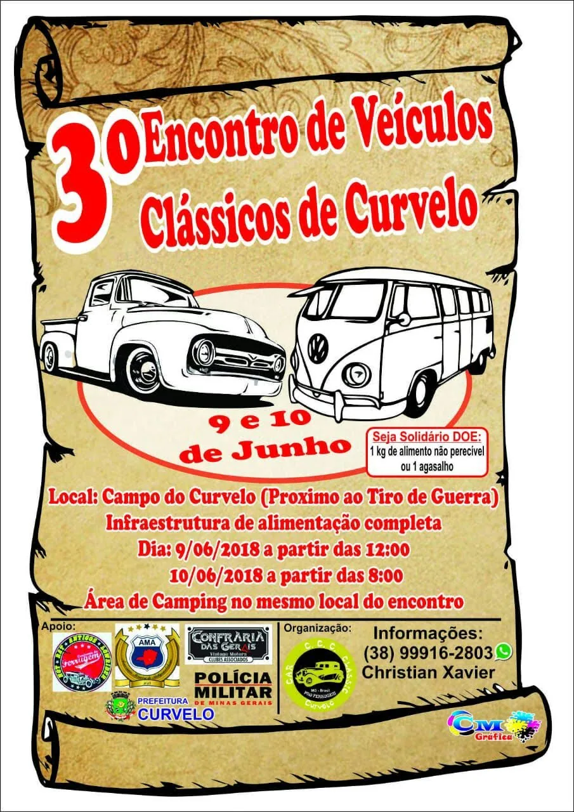
TRADIÇÃO NA ESTRADA
Desde então, os eventos cresceram a cada edição, reunindo participantes de diversas cidades do Brasil e valorizando os veículos clássicos, a amizade, a memória e a tradição.

UMA FAMÍLIA MAIOR
O clube cresce e reúne cada vez mais apaixonados pelo antigomobilismo.
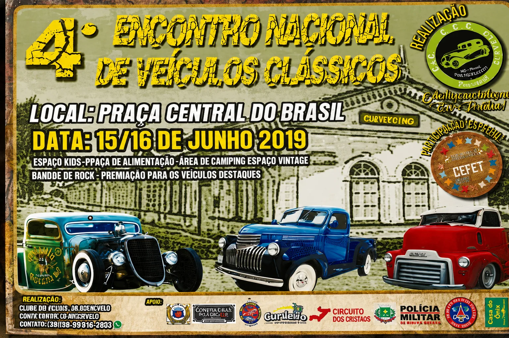
PAIXÃO QUE PERMANECE
Mesmo nos momentos de pausa, a essência do clube continuou viva: uma família formada por pessoas movidas pela paixão por veículos antigos e pela preservação da história sobre rodas.

PAUSA NAS ESTRADAS
Mesmo distantes, a paixão pelos clássicos continuou viva.
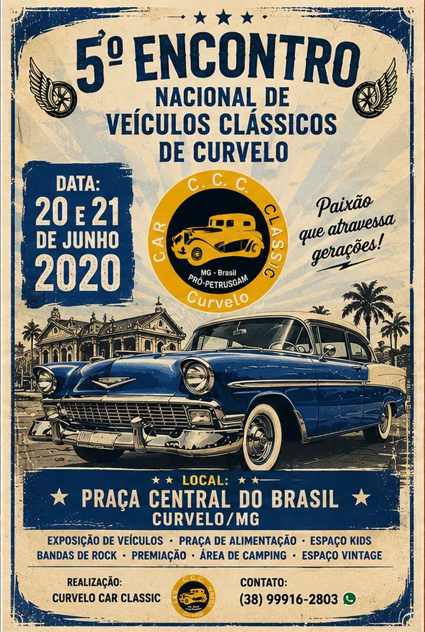
O RONCO VOLTA
Com o retorno dos encontros, o clube reafirmou seu compromisso de reunir gerações, histórias e apaixonados pelo antigomobilismo em momentos de confraternização.

O RETORNO
O ronco dos motores volta a ecoar nos encontros.
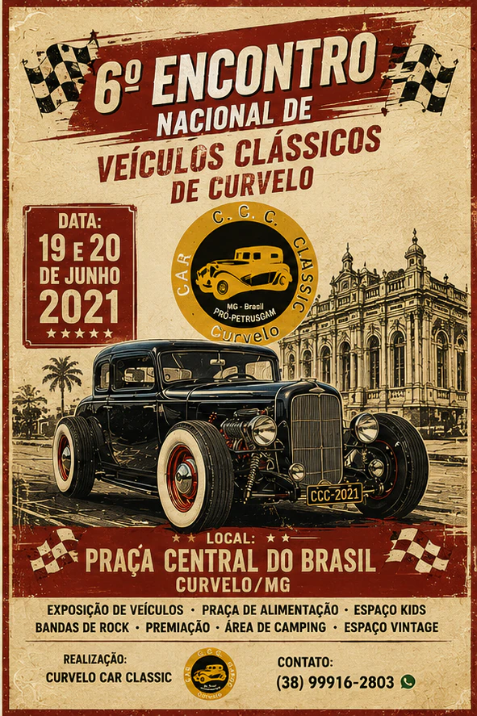
ORGANIZAÇÃO
Nos últimos anos, o clube passou por um importante processo de organização e fortalecimento institucional, com a entrada de novos membros e novas iniciativas.

TRADIÇÃO FORTALECIDA
O clube ganha ainda mais força e reconhecimento regional.
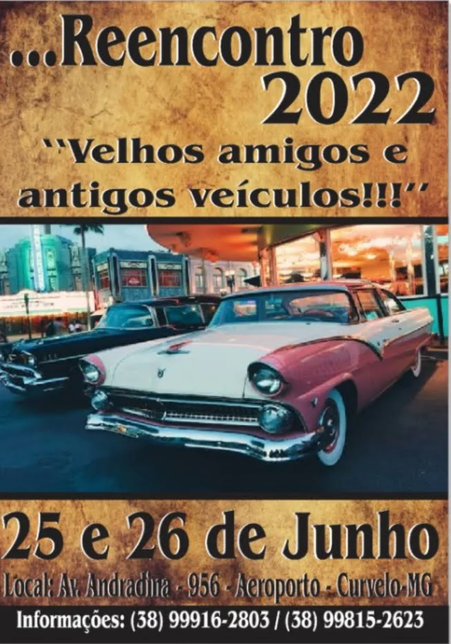
PERTENCIMENTO
A confecção de uniformes, bonés e outros itens fortaleceu a identidade visual do grupo e aumentou a integração entre seus integrantes durante reuniões e eventos.

IDENTIDADE PRÓPRIA
O grupo fortalece sua marca, sua união e sua presença.
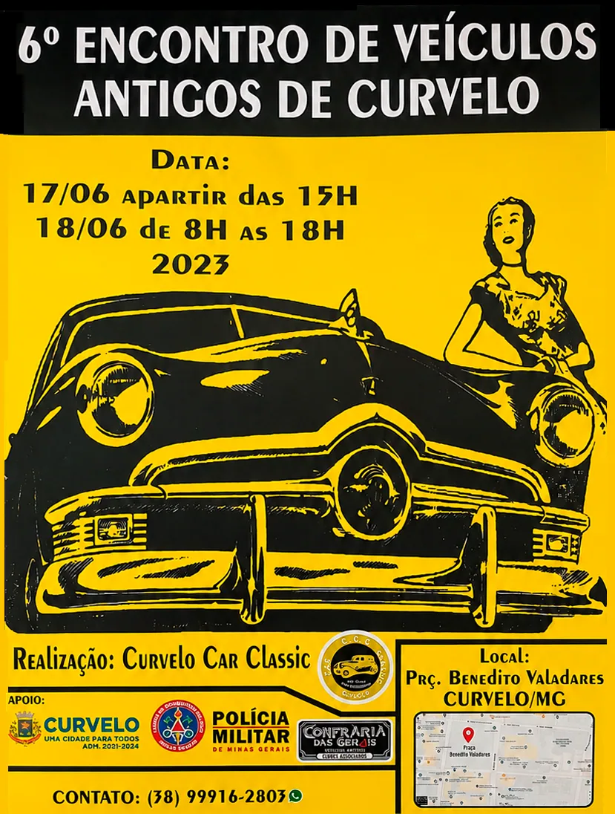
LOCALIZAÇÃO ESTRATÉGICA
Situada na região central de Minas Gerais, Curvelo facilita o acesso de participantes de diversas regiões, tornando-se ponto de encontro para expositores e apaixonados por clássicos.

CURVELO EM DESTAQUE
Participantes de várias cidades passam a fazer parte dos encontros.
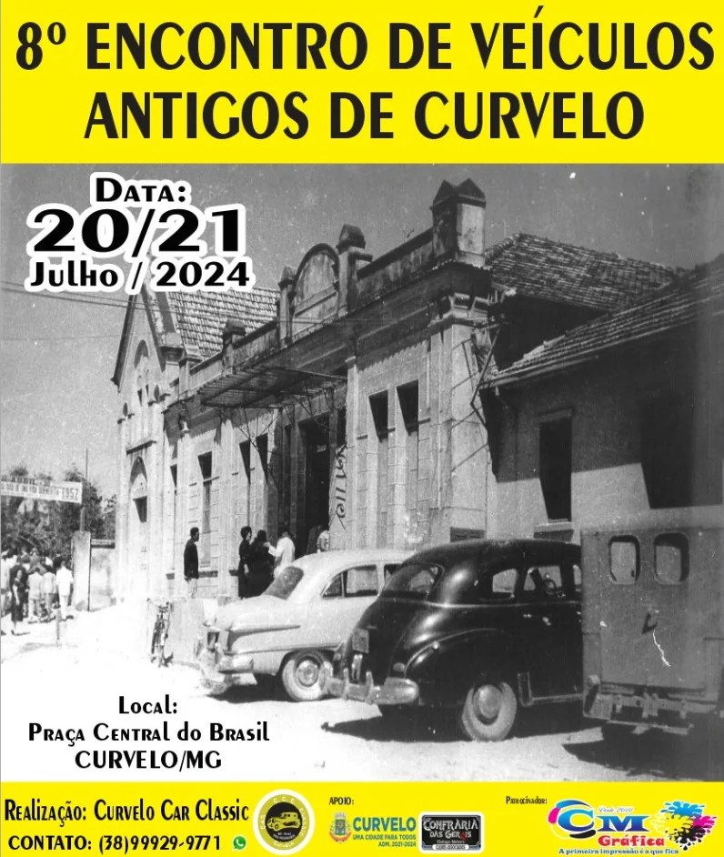
ENCONTRO NACIONAL
O evento se tornou referência para amantes do antigomobilismo, proporcionando confraternização, cultura, entretenimento e preservação histórica.

UMA HISTÓRIA EM MOVIMENTO
Novas memórias continuam sendo construídas a cada encontro.
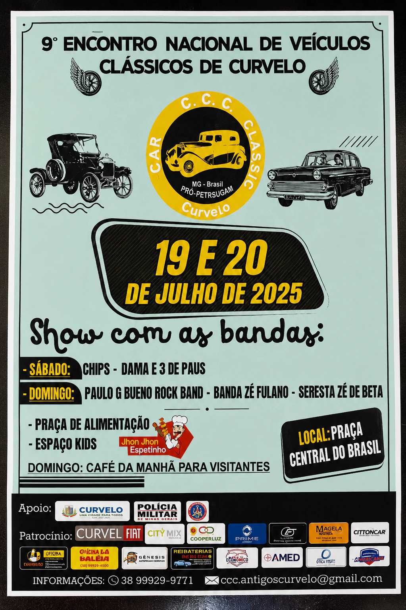
HISTÓRIA SOBRE RODAS
Hoje, o clube realiza com orgulho o 10º Encontro Nacional de Veículos Clássicos de Curvelo. Mais do que um clube, somos uma família movida pela paixão por veículos antigos.

O FUTURO CONTINUA
O ronco dos motores e a paixão pelos clássicos seguem reunindo gerações.
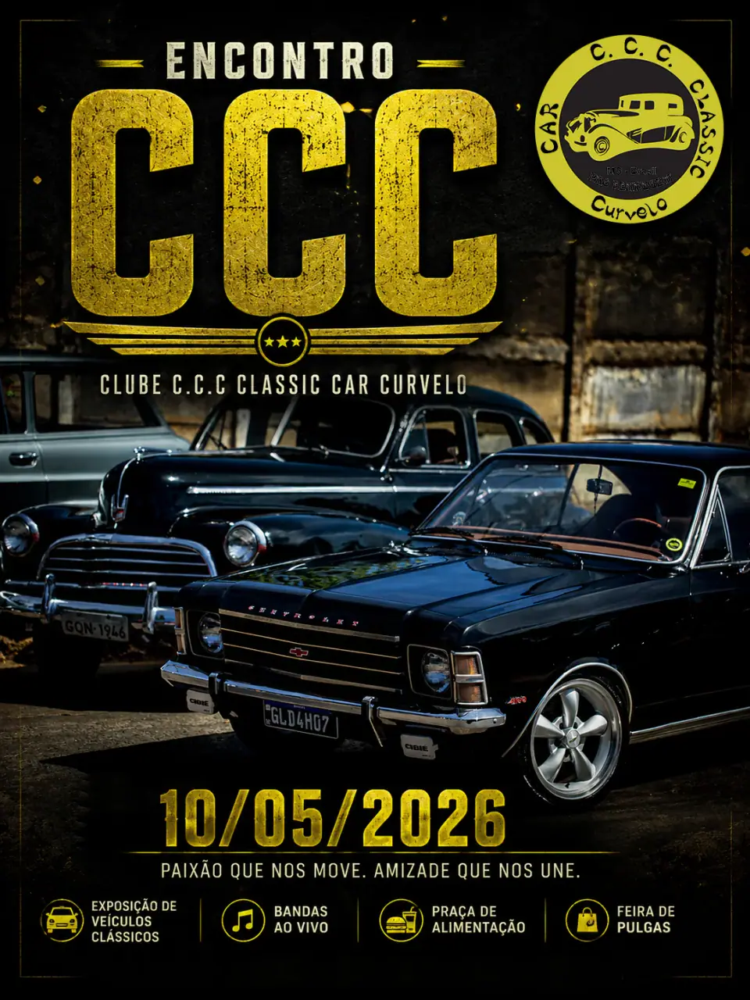